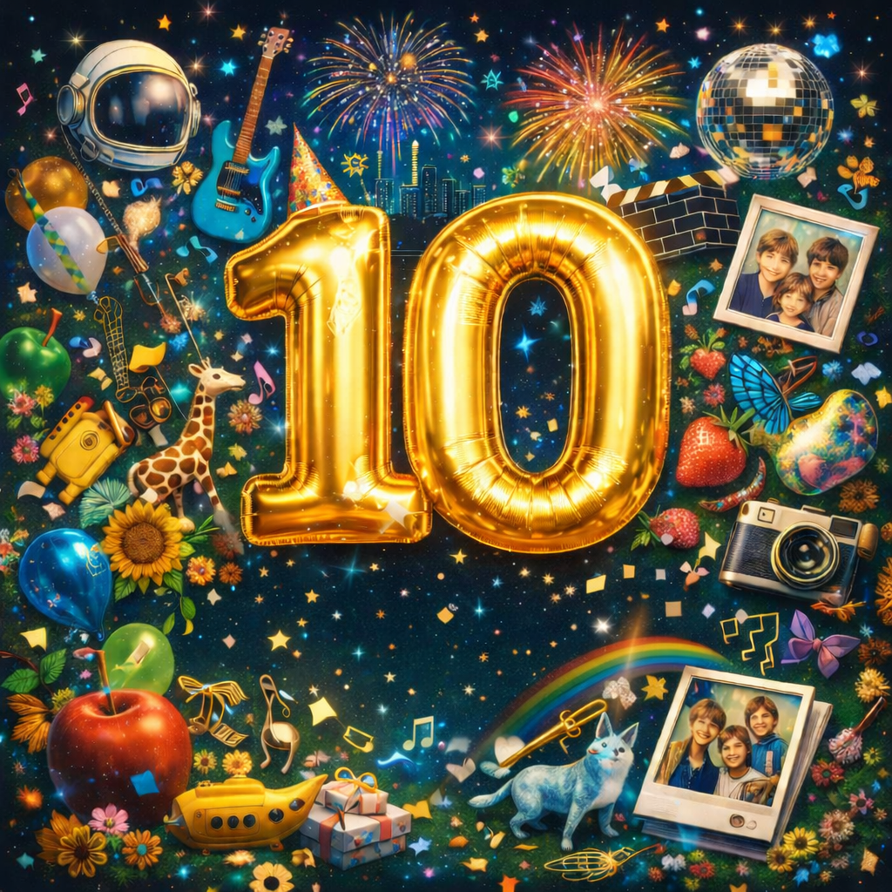
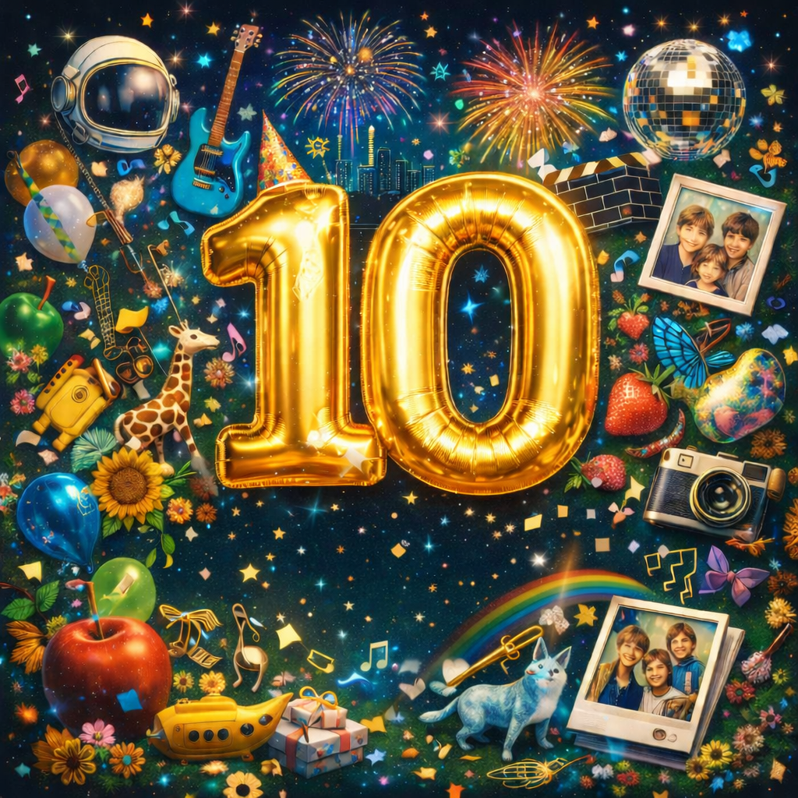

このサイトの説明
Mrs. GREEN APPLE中で私が推す楽曲の魅力を、個人的な目線で紹介します。
では、この下から早速ランキングです！
Mrs. GREEN APPLEの私の推し楽曲と、その楽曲の魅力を伝えるサイトです
Mrs. GREEN APPLE中で私が推す楽曲の魅力を、個人的な目線で紹介します。
では、この下から早速ランキングです！
サビに出てくる
「愛してるよホープレス」・「憂鬱も抱きしめてどこまでも行けるそんな気がしてる」
（ANTENNA歌詞より抜粋）
という歌詞が希望がないこと、それすらも愛し、先が見えなくとも前に進んで行こうというメッセージを感じて最高！また、イントロのモールス信号にも着目するとより面白い！
収録アルバム
 

気持ちのいいリズムだけでなく、歌詞冒頭の
「馬鹿みたいだねそんな凹んで大層ね夜中も元気があるじゃないの」やラスサビ前半の「愛そう。ただ愛そう。出来るかな？ムズイから。」
（アンラブレス歌詞より抜粋）
などの皮肉を込めつつも励ましのメッセージもあり、ただのポップじゃない！曲自体もMrs. GREEN APPLEの曲の中では短く、爽快感も味わえる！
収録アルバム
この楽曲は「探検」「発見」にフォーカスし、不安や孤独の中に日常の小さな奇跡を知りたいという気持ちを歌ったもので、サビの
「ちょっとした奇跡にクローズアップ」や「ちょっとした美学にクローズアップ」「ちょっとした遊びにクローズアップ」
（コロンブス歌詞より抜粋）
は、まさに日常の小さな奇跡を知りたいという気持ちが書かれた歌詞で、音楽自体も聴いていてテンションが上がる素晴らしい楽曲です！
収録アルバム/シングル
テンポの速い楽曲の中に
「見せかけの愛は磨けないからもうそろそろね錆が出ちゃう」や「本物の愛こそ飾れないから大事にね大事にね」
（Blizzard歌詞より抜粋）
などの本物の愛と見せかけの愛といった愛の本質を歌っており、単なる感情を歌った楽曲ではない！
さらにMrs. GREEN APPLEの楽曲はすべて難易度が高いこの楽曲はサビがすべて裏声というハイレベルなものでもあります！
収録アルバム
歌詞冒頭や２番冒頭の
「未だ成されて無い事を実らせて見せたいな」や「未だ明かされて無い事をこの身を以て皆に見せたいな」
（CONFLICT歌詞より抜粋）
などの大きな欲求を歌いつつ、楽曲後半では、葛藤を抱えている人へのメッセージも入っている聞けば勇気をもらえる楽曲！
収録アルバム